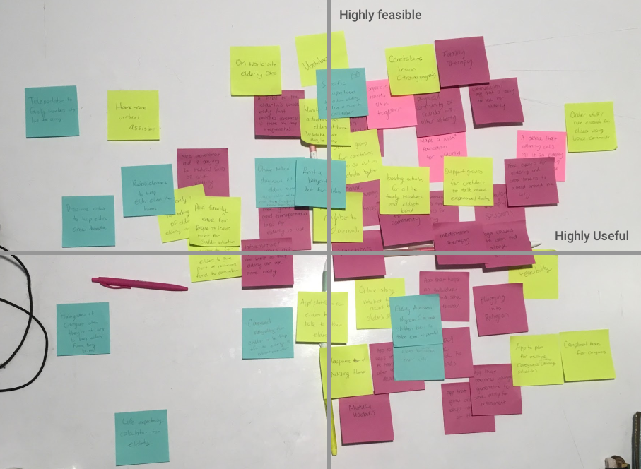

Caregiver Experience


PROJECT BACKGROUND
Our team was only given a target population to focus on which was 60 years old caring for their elderly relative. From there, we conducted research and interviews to understand our target population and identify design opportunities. We gathered all our insights to brainstorm various solutions. We presented our ideas to our target population to get feedback on the solutions.

RESEARCH METHOD
We started our preliminary research online to learn about the problem space. We were able to gather some insights about potential problems that might arise for the caregiver. Next, we conducted a phone call interview and an in person interview. Before the interviews, we prepared a set of questions to help start the conversations, but the interviews were semi-structured in nature. The interviews were formed more around listening to the individuals we were interviewing, rather than asking for specific information.

SYNTHESIZING THE DATA
Using all the research we gathered, we constructed a number of models to better understand and visualize our data.
Stakeholder map
After doing preliminary research, we started to brainstorm the stakeholders involved in this experience to see where we will be able to gather insights from.

Persona
One of our personas is Sarah, a 64 year old woman who is taking care of her 88 year old father who lost his wife a year ago. Due to her father’s situation, Sarah recently quit her old job and is now working in an environment that is much warmer about her current situation. Her father lives 2 hours away from Sarah and he refuses to move closer to Sarah because he desires to be independent. Due to all these circumstances, Sarah visits and stays over at her father’s every weekend to clean up, pay his bills, do other chores, and keep her father company.

Our second persona is Jen, a 62 year old woman who is currently working as a freelance producer. She takes care of her elderly, but still healthy, mother. Jen who lives just next door to her mother. She has 5 other siblings who help her care for their mother on a weekly basis. She visits her mother every morning to check up, then for lunch, and sometimes for dinner, depending on the day of the week. On the nights she does not visit, her siblings take her place.

Empathy Map
We used the journey maps to help create an empathy map and brainstorm what our typical persona might think, feel, see, say and do. There was also a section in the empathy map to brainstorm the different pains and gains our persona may experience. Our focus was to generalize the data gathered from interviews so that it could apply to a wider range of possible users.


VISIONING PROCESS
We then started brainstorming the different problems our persona may experience in an affinity map. From there, we grouped similar problems together and added labels using “I” statements to better represent the caregiver’s concerns.

For the solutions, we brainstormed potential ideas individually before mapping on a feasibility and usefulness graph. It was difficult gauging where to place the ideas on the graph since the ideas were all relative to each other. This led to multiple rounds of revisions.
